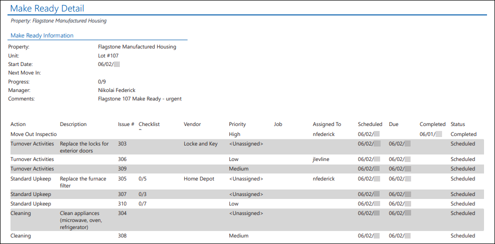
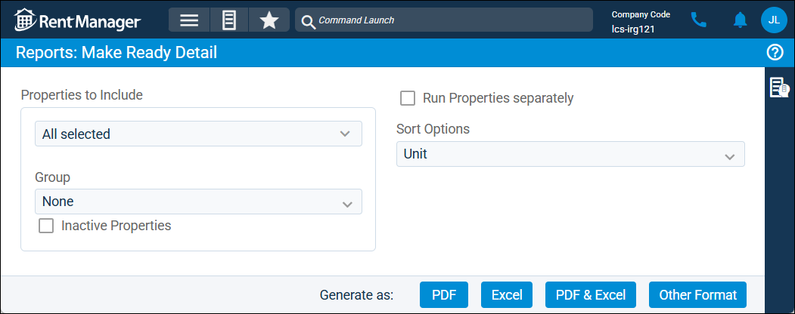

Source: https://rmxhelp.rentmanager.com/Topics/Express/Other/Reports/Make-Ready-Detail.htm
Make Ready Detail (Report)
The Make Ready Detail report displays units that are assigned a make-ready process and the associated make-ready actions, which include service issues and inspections, for each of those units undergoing the unit turnover process.
Related Privileges
| Group | Privilege | Column |
|---|---|---|
| Letter/Email Templates/Reports/Packets | Run reports | Enabled |
Additionally, on the Reports tab, you must have access to Make Ready Detail.
For more information, refer to Control User Access.
To view the Make Ready Detail report, do the following:
-
Go to
 arrow_forward Services arrow_forward Make Ready arrow_forward Make Ready Detail.
arrow_forward Services arrow_forward Make Ready arrow_forward Make Ready Detail.
The Reports: Make Ready Detail page displays. -
Adjust the report options as desired. Each option is described below.
-
Generate the report in your desired file format(s).
Related Preferences
Reports may look different depending on whether or not the Use modernized report style system preference is enabled. For more information, refer to General Report Options (System Preferences).

Report Options
The report options described below determine what data displays in the report.

Properties to Include
Select each property or a property Group to be included in the report.
More Information
This field populates only with the properties to which you have access. Your access to properties can be managed from your user account or on the property's details page. For more information, refer to Limit Access to a Property.
Optionally, check Show Inactive Properties to include properties that are no longer active.
Run Properties Separately
Check to generate a separate report for each selected property. Otherwise, all selected properties are combined into a single report.
Sort Options
Units are first sorted alphanumerically by Property name, and each page is dedicated to a unit undergoing a make ready process. Select one of the following options to determine the order in which the pages of the report generate for each property.
| Option | Description |
|---|---|
|
Completed Date |
Units with a completed make ready process display first in the results. Make ready actions for each unit are further sorted chronologically by the Completed date in ascending order (oldest to newest). |
|
Next Move In |
Units are sorted chronologically by the Next Move In date in ascending order (nearest to furthest in the future). Units with no future move in date display last in the results. |
|
Property |
Units are sorted alphanumerically by Property name. If there are multiple units at a property undergoing a make ready process, they are further sorted by Unit name. |
|
Start Date |
Units are sorted chronologically by the Start Date in ascending order (oldest to furthest in the future). |
|
Unit |
The pages for each unit are sorted alphanumerically by Unit name. |
Report Results
The report results are described below including, if applicable, section, column, and subreport or tab descriptions.
Report Header
The report header displays the report name and which properties are examined in the report.
Make Ready Information
The fields that display in the Make Ready Information section are described below.
| Field | Description |
|---|---|
|
Comments |
Additional details about the make ready process. |
|
Manager |
The Rent Manager user who oversees the make ready process. |
|
Next Move In |
If applicable, the Move In date of the next tenant scheduled to move into the unit. |
|
Progress |
The number of actions completed out of the total number of actions in the make ready process. |
|
Property |
The property where the make-ready process is scheduled. |
|
Start Date |
The date that the make-ready process is scheduled to begin. |
|
Unit |
The unit where the make-ready process is scheduled. |
Column Descriptions
The columns that display in the report are described below.
| Column | Description |
|---|---|
|
Action |
The name of the step or category of work involved in the make ready process. For more information, refer to Make-Ready Actions (Page). |
|
Assigned To |
The user assigned to the inspection or service issue. |
|
Checklist Progress |
The number of completed checklist items out of the total number of checklist items for the service issue. |
|
Completed |
The date when the associated inspection Status is set to Closed or the associated service issue Closed field is checked and contains a date. |
|
Description |
Additional details about the inspection or service issue. |
|
Due |
The date by which the inspection or service issue needs to be completed. |
|
Issue # |
The unique, system-generated number automatically assigned to each service issue. |
|
Job |
The job used to track finances associated with the service issue. For more information, refer to Jobs (Page). Related Preferences In order to use the job costing tool in Rent Manager, Enable job costing must be checked in system preferences. For more information, refer to General Options (System Preferences). |
|
Priority |
The urgency assigned to the inspection or service issue (e.g., Critical, High, Medium, or Low). |
|
Scheduled |
The expected date of the inspection's or service issue's resolution. |
|
Status |
The customized condition that describes the progress of the inspection or service issue (e.g., New, Work in Progress, Resolved, Unresolved). |
|
Vendor |
The vendor assigned to the service issue. |